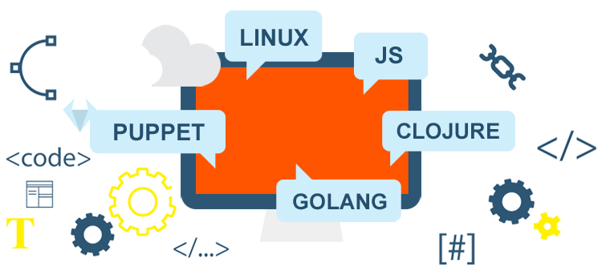

EnableIT specializes in helping companies design and implement stable, high performance and easily manageable networks, using Open Source technologies such as Puppet, Linux, Loadbalancers etc.
We Focus on Quality and Cost-Effective Solutions.
Working Together Towards SUCCESS |
What our clients say about us